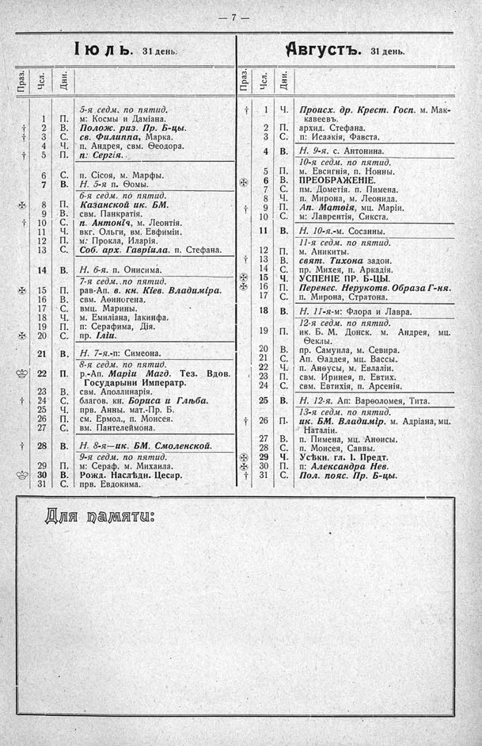

Лист источника 53
Скан

Распознанный текст
- 7 -
Іюль. 31 день.
Праз. Чсл. Дни.
5-я седм. по пятид.
1 П. м: Космы и Даміана.
⸗ 2 В. Полож. риз. Пр. Б-цы.
† 3 С. св. Филиппа, Марка.
4 Ч. п. Андрея, свм. Ѳеодора.
† 5 П. п: Сергія.
6 С. п. Сісоя, м. Марфы.
7 В. Н. 5-я п. Ѳомы.
6-я седм. по пятид.
✠ 8 П. Казанской ик. БМ.
9 В. свм. Панкратія.
† 10 С. п. Антонія, м. Леонтія.
11 Ч. вкг. Ольги, вм. Евфиміи.
12 П. м: Прокла, Иларія.
13 С. Соб. арх. Гавріила. п. Стефана.
14 В. Н. 6-я. п. Онисима.
7-я седм. по пятид.
✠ 15 П. рав-Ап. в. кн. Кіев. Владиміра.
16 В. свм. Аѳиногена.
17 С. вмц. Марины.
18 Ч. м. Емиліана, Іакинфа.
19 П. п: Серафима, Дія.
✠ 20 С. пр. Іліи.
21 В. Н. 7-я.-п: Симеона.
8-я седм. по пятид.
♔ 22 П. р.-Ап. Маріи Магд. Тез. Вдов. Государыни Императр.
23 В. свм. Аполлинарія.
† 24 С. благов. кн. Бориса и Глѣба.
25 Ч. прв. Анны. мат.-Пр. Б.
26 П. см. Ермол., п. Моисея.
27 С. вм. Пантелеймона.
† 28 В. Н. 8-я—ик. БМ. Смоленской.
9-я седм. по пятид.
29 П. м: Сераф. м. Михаила.
♔ 30 В. Рожд. Наслѣдн. Цесар.
31 С. прв. Евдокима.
Августъ. 31 день.
Праз. Чсл. Дни.
† 1 Ч. Происх. др. Крест. Госп. м. Маккавеевъ.
2 П. архид. Стефана.
3 С. п: Исаакія, Фавста.
4 В. Н. 9-я. с. Антонина.
10-я седм. по пятид.
5 П. м. Евсигнія, п. Нонны.
✪ 6 В. ПРЕОБРАЖЕНІЕ.
7 С. пм. Дометія. п. Пимена.
8 Ч. п. Мирона, м. Леонида.
† 9 П. Ап. Матѳія, мц. Маріи.
10 С. м: Лаврентія, Сикста.
11 В. Н. 10-я.-м. Сосанны.
11-я седм. по пятид.
12 П. м. Аникиты.
† 13 В. свят. Тихона задон.
14 С. пр. Михея, п. Аркадія.
✪ 15 Ч. УСПЕНІЕ ПР. Б-ЦЫ.
✠ 16 П. Перенес. Нерукотв. Образа Г-ня.
17 С. п. Мирона, Стратона.
18 В. Н. 11-я-м: Флора и Лавра.
12-я седм. по пятид.
19 П. ик. Б. М. Донск. м. Андрея, мц. Ѳеклы.
20 В. пр. Самуила, м. Севира.
21 С. Ап. Ѳаддея, мц. Вассы.
22 Ч. п. Анѳусы, м. Евлаліи.
23 П. свм. Иринея, п. Евтих.
24 С. свм. Евтихія, п. Арсенія.
25 В. Н. 12-я. Ап: Варѳоломея, Тита.
13-я седм. по пятид.
† 26 П. ик. БМ. Владимір. м. Адріана, мц. Наталіи.
27 В. п. Пимена, мц. Анѳисы.
28 С. п. Моисея, Саввы.
✪ 29 Ч. Усѣкн. гл. І. Предт.
✠ 30 П. п: Александра Нев.
† 31 С. Пол. пояс. Пр. Б-цы.
Для памяти: